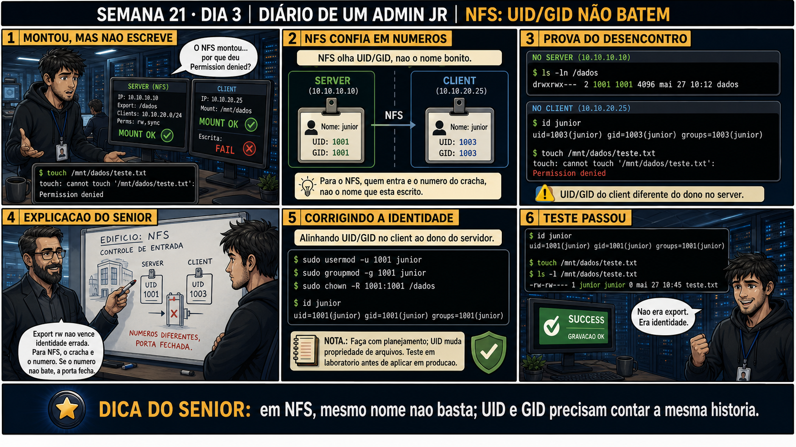

Semana 21 · Dia 3 | Nível Júnior — Redes
UID e GID entre Máquinas
o NFS não transmite nomes de usuário — transmite só números, e números precisam bater
ANTES DE ALTERAR, OBSERVE. DEPOIS DE ALTERAR, VALIDE.
1. O chamado
Chamado #2103: "Criei um arquivo como o usuário 'joao' no cliente, mas quando olho o
mesmo arquivo no servidor, o dono aparece como 'maria' — que nem existe no meu cliente!" Isso não é bug, é
consequência direta de como o NFS trata identidade: ele nunca envia o NOME "joao" pela rede, só o
UID
numérico associado a ele — e se esse número for diferente entre as duas máquinas, o nome mostrado muda.
💡 Passa o mouse nas palavras destacadas pra ver uma dica rápida — clica se quiser a explicação completa com analogia.
2. Antes de ver as opções — tenta responder
🧠 Recall ativo: se joao tem UID 1001 no cliente, e o servidor tem UID 1001 associado a maria, o
que exatamente acontece quando joao cria um arquivo no diretório montado?
O arquivo é criado no servidor com o UID 1001 gravado nos metadados — só isso, um número. Quando você
olha esse arquivo NO SERVIDOR, o sistema traduz 1001 pro nome cadastrado ali, que é maria — mesmo o
arquivo tendo sido criado por joao do lado do cliente. Não existe nenhuma confusão de permissão real
acontecendo (o dono efetivo, pro sistema, é sempre o número) — é só uma questão de NOME exibido
diferente, porque o mapeamento nome↔número diverge entre as duas máquinas.
3. Questão comentada — clica numa alternativa
Qual é a solução correta e mais direta pra evitar esse tipo de confusão de dono
de arquivo entre cliente e servidor NFS?
💡 Analogia do Sênior para Fixar: O princípio fundamental de 03 NFS MOUNT UID GID é como o alicerce de sustentação de um viaduto: garante que a estrutura de comunicação suporte alto tráfego sem colapsar.
4. Decodificador de conceitos
Clica em qualquer termo pra ver a definição completa e uma analogia do dia a dia:
5. Ferramentas e leitura da evidência
| Comando | O que faz |
|---|---|
id <usuario> | Mostra o UID e GID de um usuário no sistema local. |
ls -n | Mostra o dono e grupo de um arquivo pelos números, não pelos nomes traduzidos. |
chown | Corrige o dono de um arquivo já criado, se necessário. |
--- no cliente --- $ id joao uid=1001(joao) gid=1001(joao) grupos=1001(joao) --- no servidor --- $ id maria uid=1001(maria) gid=1001(maria) grupos=1001(maria) # mesmo numero 1001, nome diferente cadastrado --- o arquivo criado por joao, visto no servidor --- $ ls -l /dados/uploads/arquivo.txt -rw-r--r-- 1 maria maria 0 Sep 1 14:00 arquivo.txt ← nome traduzido, numero é o mesmo $ ls -n /dados/uploads/arquivo.txt -rw-r--r-- 1 1001 1001 0 Sep 1 14:00 arquivo.txt ← aqui fica óbvio: é o mesmo numero dos dois lados --- correção: alinhar UID de joao no cliente pra bater com o esperado --- $ usermod -u 2001 joao # ajustando pra não colidir com maria (1001) no servidor
5.1 O painel 4 da prancha de hoje mostra um arquivo aparecendo com dono "nobody" (ou um número puro, sem nome nenhum) no cliente
Um colega vê ls -l mostrando literalmente o número 4000 no lugar de um nome de usuário, em vez de "nobody" ou qualquer nome reconhecível.
Por que o sistema mostra o NÚMERO puro em vez de um nome, quando o UID gravado
no arquivo não corresponde a nenhum usuário cadastrado na máquina que está exibindo?
💡 Analogia do Sênior para Fixar: Diagnosticar anomalias em 03 NFS MOUNT UID GID é como o eletricista usando o multímetro no quadro de disjuntores: mede a passagem de sinal no ponto exato da falha.
5.2 "Preciso alinhar UID pra CADA usuário manualmente, um por um, pra sempre?"
Um colega, com dezenas de usuários e vários servidores, acha trabalhoso demais alinhar UID/GID manualmente em cada máquina.
Por que, em ambientes maiores, alinhar UID/GID manualmente máquina por máquina
não é a abordagem recomendada a longo prazo?
💡 Analogia do Sênior para Fixar: Aplicar as boas práticas de 03 NFS MOUNT UID GID é como o protocolo de segurança da aviação: elimina pontos únicos de falha e garante previsibilidade operacional.
6. Procedimento profissional
- Diante de um dono de arquivo "errado" ou desconhecido, confirme os UIDs com id em ambas as máquinas.
- Use ls -n pra ver o número puro, cortando a confusão do nome traduzido.
- Se o UID divergir, decida: alinhar manualmente (ambientes pequenos) ou usar identidade centralizada (ambientes maiores).
- Ao alinhar UID com usermod -u, confirme que o novo número não colide com outro usuário já existente.
- Reaplique chown nos arquivos já existentes que ficaram com dono desalinhado, se necessário.
7. Laboratório guiado — marca conforme for testando
Segurança: execute os testes apenas em VMs descartáveis e confirme nomes de usuários, discos e arquivos antes de cada comando.
- Confirme o UID de um usuário de teste em duas VMs de laboratório com id.Resultado esperado: UIDs diferentes entre as duas VMs (cenário proposital de descompasso).
- Crie um arquivo do cliente num diretório NFS montado, e observe o dono exibido no servidor.Resultado esperado: nome de dono diferente do esperado, ou número puro sem nome.🧑🏫 Aqui entra o Mentor (em breve): se ficar difícil decidir qual UID mudar sem quebrar outros arquivos já existentes, este é o ponto onde o chat com o Sênior-IA vai te ajudar a planejar a migração.
- Alinhe o UID do usuário de teste no cliente com usermod -u, confirmando que não colide com ninguém.Resultado esperado: UID igual nas duas VMs após o ajuste.
- Crie um novo arquivo e confirme que o dono agora aparece correto nas duas máquinas.Resultado esperado: mesmo nome de usuário exibido corretamente nos dois lados.
8. Validação e encerramento
- NFS transmite UID/GID numéricos, nunca nomes de usuário.
- Dono "errado" ou número puro sem nome é sintoma clássico de UID/GID desalinhado entre máquinas.
- ls -n revela o número real, cortando a tradução de nome que pode confundir o diagnóstico.
- Ambientes maiores devem preferir identidade centralizada a alinhamento manual repetido.
Rollback e limites
Mudar o UID de um usuário existente com usermod -u é uma operação sensível — todo
arquivo que esse usuário já possui (não só no NFS) tecnicamente ainda pertence ao UID antigo, a menos que
seja explicitamente atualizado com find + chown. Planeje essa mudança com cuidado em ambiente com dados já
existentes.
💡 Sobre repetição espaçada: "o sistema trabalha com números, nomes são só
tradução pra humanos" é o mesmo princípio visto em permissões Unix (Semana 2, UID/GID locais) — vale
reforçar essa ideia geral de identidade numérica por trás de todo nome exibido. O Anki vai conectar os dois.
9. Resposta final
Alternativa correta: A. Nesta aula, a solução foi garantir que o mesmo
usuário tivesse o mesmo UID nas duas máquinas. O ponto central do caso é este: o NFS não transmite nomes de
usuário — transmite só números, e números precisam bater.
🔓 O que você desbloqueou hoje
Capacidade de diagnosticar e corrigir descompasso de UID/GID entre cliente e
servidor NFS. Amanhã você aprende a montar NFS de forma persistente via fstab, com a mesma disciplina de
segurança de boot já vista na Semana 12 — e uma opção específica que evita travar o boot inteiro se o
servidor NFS estiver fora do ar.